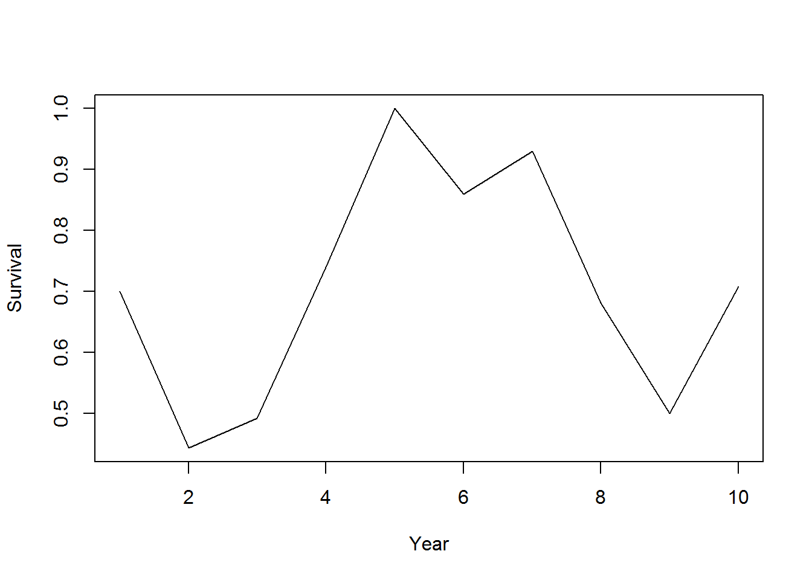
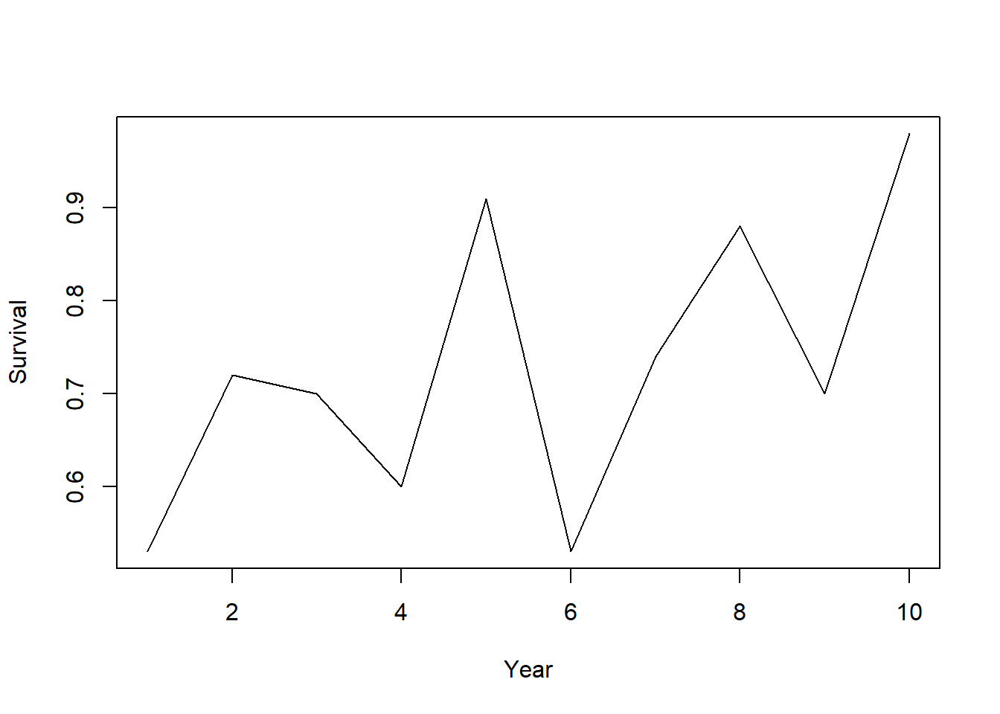
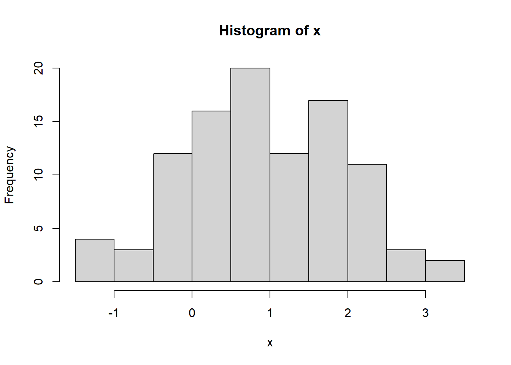
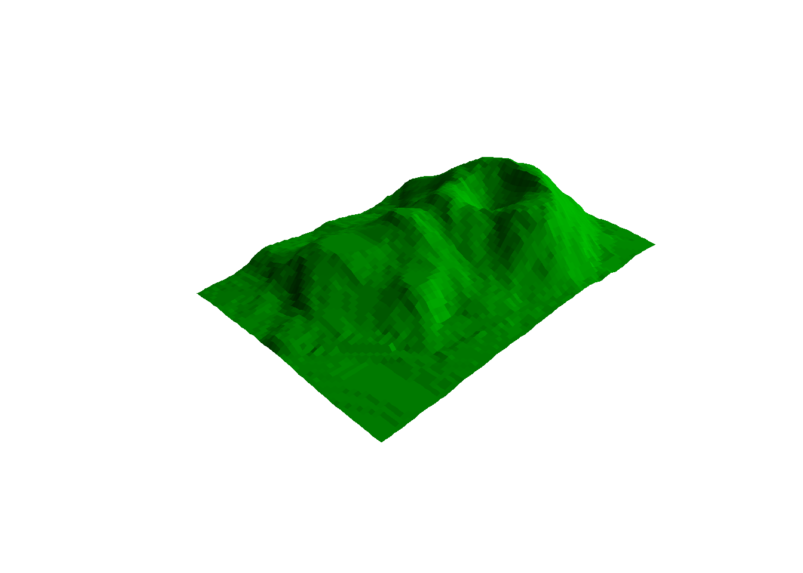
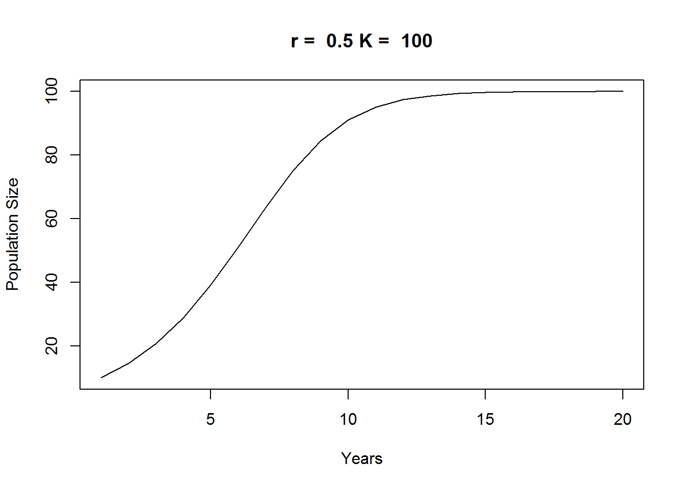
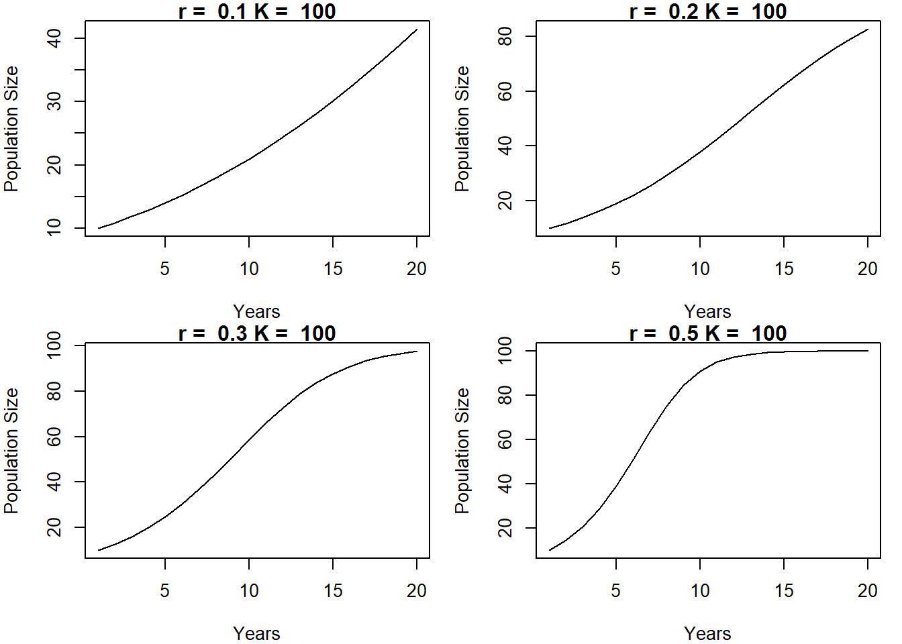

Module 1.4
Basic programming in R
Fall 2020
NOTE: this module borrows heavily from an R short course developed by a team at Colorado State University.
Load script for module #1.4
Click here to download the script! Save the script to your working directory (R Project directory).
Load your script in your RStudio Project. To do this, open your RStudio Project and click on the folder icon in the toolbar at the top and load your script.
Let’s get started with basic programming in R!
Functions in R
Everything in R can be boiled down to this one sentence: data are expressed as vectors, and data objects are managed, manipulated, and visualized via functions. Functions are absolutely central to R!
Let’s start with a blank workspace:
#######
# Start with blank workspace
rm(list=ls())As we have seen, base R already includes lots of functions, and thousands more functions are available in packages that you can install (next module of this workshop). Nonetheless, it’s really useful to know how to write your own functions! For example, we might write our own function if we have to repeat certain sets of operations over and over in different contexts.
We use the following syntax when we are writing our own functions:
my.function <- function(input1,input2,...){ # function takes various arguments (inputs)
## [Algorithm goes here: Do something useful with the inputs]
return(output) # return some output
}
First function: “Hello, world!”
Let’s try to write our first function, which prints out a message: “Hello, world!”
####
#### Functions
####
my.function = function(){ # this function has no arguments
message <- "Hello, world!"
return(message)
}Now we can run the function!
my.function()## [1] "Hello, world!"What happens if you run the function without the parentheses?
my.function # try running without parentheses- what happens?## function(){ # this function has no arguments
## message <- "Hello, world!"
## return(message)
## }‘Mean’ function
Let’s write a function to compute the mean of a vector. Okay fine, base R already has the “mean()” function, but let’s do it anyway!
## We can write our own functions. Useful if we have to repeat the same operations over and over with different inputs.
my.mean <- function(x){
m <- sum(x)/length(x)
return(m)
}
foo <- c(2, 4, 6, 8)
my.mean(foo)## [1] 5‘Square’ function
How about a function to square its arguments?
## A function to square the arguments.
square <- function(x){
x^2
}
## Square a single value (scalar).
square(2)## [1] 4## Square all elements of a vector.
square(1:10)## [1] 1 4 9 16 25 36 49 64 81 100‘Logit’ function
The logit operation (log-odds) is not included in the base R package. Let’s write it ourselves!
## Often, we need to write functions that are not included in the base R package e.g., the logit function.
## Calculate the log-odds (logit).
logit <- function(x){
log(x/(1-x))
}
## Calculate logit of 0.9.
logit(.9)## [1] 2.197225## Sequence between 0 and 1.
x <- seq(from = 0, to = 1, by = 0.01)
## Caclulate the logit of a vector.
logit.x <- logit(x)
logit.x## [1] -Inf -4.59511985 -3.89182030 -3.47609869 -3.17805383
## [6] -2.94443898 -2.75153531 -2.58668934 -2.44234704 -2.31363493
## [11] -2.19722458 -2.09074110 -1.99243016 -1.90095876 -1.81528997
## [16] -1.73460106 -1.65822808 -1.58562726 -1.51634749 -1.45001018
## [21] -1.38629436 -1.32492541 -1.26566637 -1.20831121 -1.15267951
## [26] -1.09861229 -1.04596856 -0.99462258 -0.94446161 -0.89538405
## [31] -0.84729786 -0.80011930 -0.75377180 -0.70818506 -0.66329422
## [36] -0.61903921 -0.57536414 -0.53221681 -0.48954823 -0.44731222
## [41] -0.40546511 -0.36396538 -0.32277339 -0.28185115 -0.24116206
## [46] -0.20067070 -0.16034265 -0.12014431 -0.08004271 -0.04000533
## [51] 0.00000000 0.04000533 0.08004271 0.12014431 0.16034265
## [56] 0.20067070 0.24116206 0.28185115 0.32277339 0.36396538
## [61] 0.40546511 0.44731222 0.48954823 0.53221681 0.57536414
## [66] 0.61903921 0.66329422 0.70818506 0.75377180 0.80011930
## [71] 0.84729786 0.89538405 0.94446161 0.99462258 1.04596856
## [76] 1.09861229 1.15267951 1.20831121 1.26566637 1.32492541
## [81] 1.38629436 1.45001018 1.51634749 1.58562726 1.65822808
## [86] 1.73460106 1.81528997 1.90095876 1.99243016 2.09074110
## [91] 2.19722458 2.31363493 2.44234704 2.58668934 2.75153531
## [96] 2.94443898 3.17805383 3.47609869 3.89182030 4.59511985
## [101] Inf## Plot x on x-axis, and logit(x) on y axis.
plot(x, logit.x, type = 'l',xlab="x",ylab="logit(x)") # View the output graphically.
‘Expit’ function
A useful, related function is the inverse-logit, or “expit” function:
## Sequence between 0 and 1.
x <- seq(from = 0, to = 1, by = 0.01)
logit.x <- logit(x)
## The expit (or inverse logit) funtion.
expit <- function(x){
exp(x)/(1+exp(x))
}
## Calculate the inverse-logit of logit(0.9) = 2.197225.
expit(2.197225)## [1] 0.9expit.logit.x <- expit(logit.x) # Return to original x values.
## Plot x on x-axis, and expit(logit(x)) = x on y axis.
plot(x, expit.logit.x, type = 'l',xlab="x",ylab="expit(logit(x))")
## Plot "logistic" curve
plot(x=seq(-3,3,0.1),y=expit(seq(-3,3,0.1)),type="l",xlab="x",ylab="expit(x)")
Wildlife survival function
Finally, let’s develop a function to compute the survival rate from data collected on wild individuals tracked over time:
## n is the number of animals being monitored.
## d is the number of animals that died.
survival <- function(n, d){
(n-d)/n
}
## One year of data.
survival(n = 10, d = 5)## [1] 0.5## Simulate many years of data.
d <- sample(0:50, 10, replace = TRUE) # note use of "sample()" function [random number of dead individuals]
n <- rep(100, times=10) # total number of individuals
surv <- survival(n = n, d = d)
surv## [1] 0.90 0.60 0.81 0.84 0.76 0.69 0.82 0.94 0.96 0.92## Plot year-specific survival rate (random- will look different every time!)
plot(1:10, surv, type = 'l',xlab="Year",ylab="Survival")
Conditional statements
Conditional, or logical, operations (IF [condition] THEN [do something] ELSE [do something]) are a basic building block of computer programming.
if…else statements in R
The basic syntax for if…else statements in R is as follows:
if([some condition]){ ## if some condition is met
[execute some commands]
}else if ([some other condition]){ ## if some other condition is met (often this clause is not necessary)
[execute some other commands]
}else{ ## if none of the above conditions are met (otherwise...)
[execute some other commands]
}
NOTE: you can include any number of “else if(…)” statements- or you can omit these entirely!
Let’s try it!
####
#### if...else statements
####
########
# Draw a sample from a Binomial distribution with p = 0.7 (here, p is detection probability).
p <- 0.7 # probability of detection
x <- rbinom(n = 1, size = 1, prob = p) # single 'coin flip' with prob success equal to p
if (x > 0) {
print("Detected")
} else {
print("Not detected")
}## [1] "Detected"######
# Make a "safe" version of the "logit" function
logit.safe <- function(x){
bad <- ((x<0)|(x>1))
if(any(bad)){
stop("logit is only defined for x between 0 and 1!")
}else{
log(x/(1-x))
}
}
x <- seq(from = -1, to = 2, by = 0.1)
# logit(x) # this returns impossible numbers (NaNs)
# logit.safe(x) # this will throw an informative error!
logit.safe(c(0.15,0.99))## [1] -1.734601 4.595120ifelse() function
Note that “if…else” only works for testing one condition at a time. If we have a spreadsheet with lots of data, we need something else – something “vectorized” – like the “ifelse()” function:
####
#### ifelse()
####
## Note if...else only works for running one logical (T/F) test at a time. If we have a spreadsheet with lots of data, we need something else.
n.samples <- 100
set.seed(2017) # the 'seed' allows random number generators to give the same result every time!
## 100 samples from a binomial distribution with detection probability p = 0.7.
y <- rbinom(n = n.samples, size = 1, prob = p)
y## [1] 0 1 1 1 0 0 1 1 1 1 1 1 1 1 1 1 1 0 0 0 1 1 0 0 1 0 1 1 1 1 0 1 1 1 0 1 1
## [38] 1 1 1 1 1 1 1 0 1 1 1 0 0 1 0 1 1 0 1 1 0 1 0 1 1 1 0 0 1 1 1 1 1 0 1 1 0
## [75] 0 1 1 1 1 0 1 0 1 0 1 1 1 1 1 1 0 1 1 1 0 1 0 1 0 1## incorrect usage
if (y == 1) {
print("Detected")
} else {
print("Not detected")
} # PRINTS A WARNING MESSAGE!## Warning in if (y == 1) {: the condition has length > 1 and only the first
## element will be used## [1] "Not detected"## Use ifelse instead.
detection.history <- ifelse(y == 1, print("Detected"), print("Not detected"))## [1] "Detected"
## [1] "Not detected"detection.history## [1] "Not detected" "Detected" "Detected" "Detected" "Not detected"
## [6] "Not detected" "Detected" "Detected" "Detected" "Detected"
## [11] "Detected" "Detected" "Detected" "Detected" "Detected"
## [16] "Detected" "Detected" "Not detected" "Not detected" "Not detected"
## [21] "Detected" "Detected" "Not detected" "Not detected" "Detected"
## [26] "Not detected" "Detected" "Detected" "Detected" "Detected"
## [31] "Not detected" "Detected" "Detected" "Detected" "Not detected"
## [36] "Detected" "Detected" "Detected" "Detected" "Detected"
## [41] "Detected" "Detected" "Detected" "Detected" "Not detected"
## [46] "Detected" "Detected" "Detected" "Not detected" "Not detected"
## [51] "Detected" "Not detected" "Detected" "Detected" "Not detected"
## [56] "Detected" "Detected" "Not detected" "Detected" "Not detected"
## [61] "Detected" "Detected" "Detected" "Not detected" "Not detected"
## [66] "Detected" "Detected" "Detected" "Detected" "Detected"
## [71] "Not detected" "Detected" "Detected" "Not detected" "Not detected"
## [76] "Detected" "Detected" "Detected" "Detected" "Not detected"
## [81] "Detected" "Not detected" "Detected" "Not detected" "Detected"
## [86] "Detected" "Detected" "Detected" "Detected" "Detected"
## [91] "Not detected" "Detected" "Detected" "Detected" "Not detected"
## [96] "Detected" "Not detected" "Detected" "Not detected" "Detected"## Going the other direction.
ifelse(detection.history == "Detected", 1, 0)## [1] 0 1 1 1 0 0 1 1 1 1 1 1 1 1 1 1 1 0 0 0 1 1 0 0 1 0 1 1 1 1 0 1 1 1 0 1 1
## [38] 1 1 1 1 1 1 1 0 1 1 1 0 0 1 0 1 1 0 1 1 0 1 0 1 1 1 0 0 1 1 1 1 1 0 1 1 0
## [75] 0 1 1 1 1 0 1 0 1 0 1 1 1 1 1 1 0 1 1 1 0 1 0 1 0 1xt <- cbind(rbinom(10, 1, .5), rbinom(10, 1, .6))
xt## [,1] [,2]
## [1,] 1 1
## [2,] 1 1
## [3,] 0 0
## [4,] 0 1
## [5,] 1 0
## [6,] 0 0
## [7,] 0 1
## [8,] 1 1
## [9,] 0 1
## [10,] 0 1ifelse(xt[, 1] > 0 & xt[, 2] > 0, print("Detected twice"),
print("Not detected twice"))## [1] "Detected twice"
## [1] "Not detected twice"## [1] "Detected twice" "Detected twice" "Not detected twice"
## [4] "Not detected twice" "Not detected twice" "Not detected twice"
## [7] "Not detected twice" "Detected twice" "Not detected twice"
## [10] "Not detected twice"Iterating!
Iterating, or running the same operation over and over sequentially, is another fundamental computer programming tool. Computers are great at performing multiple computations really, really fast! Loops are a good way to take advantage of computers!
The basic syntax for iterating in R is called a “FOR loop”, and looks like this:
for([iteration variable] in [iteration vector of length x]){
[perform specified operation(s) x times, with the iteration variable alternately set at each value of the iteration vector]
}
For example…
####
#### for loops
####
for(i in 1:10){
print(i)
}## [1] 1
## [1] 2
## [1] 3
## [1] 4
## [1] 5
## [1] 6
## [1] 7
## [1] 8
## [1] 9
## [1] 10for(j in c(1,2,3,4,5,6,7,8,9,10)){ # alternative
print(j)
}## [1] 1
## [1] 2
## [1] 3
## [1] 4
## [1] 5
## [1] 6
## [1] 7
## [1] 8
## [1] 9
## [1] 10n.iter <- 10 # another alternative!
count <- 0
for(i in 1:n.iter){
count <- count+1 # assign a new value of count equal to the old value of count plus 1
print(count)
}## [1] 1
## [1] 2
## [1] 3
## [1] 4
## [1] 5
## [1] 6
## [1] 7
## [1] 8
## [1] 9
## [1] 10Take the first FOR loop above. Here, “i” is the iteration variable and “1:n.iter” is the iteration vector:
# closer look at iteration vector:
1:n.iter## [1] 1 2 3 4 5 6 7 8 9 10Essentially, R starts this FOR loop by setting the value of the placeholder iteration variable “i” to the first value of the iteration vector (i.e., the value 1). It then runs the two commands in the body of the for loop [count <- count+1; print(count)]. Then, it sets the iteration variable “i” to the next value in the iteration vector (i.e., the value 2) and runs the commands again. It keeps doing this until it reaches the end of the iteration vector, at which point it stops!
It is often useful to reference the iteration variable directly within the FOR loop. Here are some examples:
## Using the iteration variable "i" within the for loop:
count <- 0
for(i in 1:n.iter){
count <- count+i # assign a new value of count equal to the old value of count + i
print(count)
}## [1] 1
## [1] 3
## [1] 6
## [1] 10
## [1] 15
## [1] 21
## [1] 28
## [1] 36
## [1] 45
## [1] 55## A for-loop for dependent sequence (here, the Fibonacci sequence)
n.iter <- 10
x <- rep(0, n.iter) # set up vector of all zeros
x[1] <- 1 # assign x_1 <- 1
x[2] <- 1 # assign x_2 = 0
for(i in 3:n.iter){
x[i] <- x[i-1]+x[i-2] # x_i = x_(i-1) + x_(i-2)
}
x## [1] 1 1 2 3 5 8 13 21 34 55Iterating using the “apply() family of functions in R”
###
### apply (A more efficient way to iterate)
###
W <- matrix(rpois(4, 10), nrow = 2, ncol = 2) # Create a 2X2 matrix using a Poisson distribution with lambda = 10.
W## [,1] [,2]
## [1,] 12 5
## [2,] 10 8## Calculate the row means.
apply(W, 1, mean)## [1] 8.5 9.0## Calculate the column means.
apply(W, 2, mean)## [1] 11.0 6.5## Identify the column that has the largest value.
apply(W, 1, which.max)## [1] 1 1## Apply your own functions to each row in a matrix.
MyFunc <- function(x){
2+sum(x/5)-3/2*mean(x)^2
}
apply(W, 1, MyFunc)## [1] -102.975 -115.900##########
# lapply: apply a function across a list or vector
lapply(1:5,function(x) exp(x)) ## [[1]]
## [1] 2.718282
##
## [[2]]
## [1] 7.389056
##
## [[3]]
## [1] 20.08554
##
## [[4]]
## [1] 54.59815
##
## [[5]]
## [1] 148.4132lapply(1:5, function(x) sqrt(trees$Volume[x]))## [[1]]
## [1] 3.209361
##
## [[2]]
## [1] 3.209361
##
## [[3]]
## [1] 3.193744
##
## [[4]]
## [1] 4.049691
##
## [[5]]
## [1] 4.335897##########
# sapply: apply a function across a list or vector, and simplify the returned object (usually returns a vector)
sapply(1:5,function(x) exp(x)) ## [1] 2.718282 7.389056 20.085537 54.598150 148.413159#########
# tapply: summarize a vector by group (apply a summary function separately to each group)
df.new <- data.frame(
var1 = runif(10),
group = sample(c("A","B"),10,replace=T)
)
tapply(df.new$var1,df.new$group,sum)## A B
## 2.948623 1.336062Practice exercises
Using conditional statements
Reject null hypothesis
In traditional statistics, one of the primary goals is to compare a test statistic with a “critical value”: if the test statistic exceeds the critical value, you can reject a null hypothesis with a reasonable degree of certainty (such that the rate at which you incorrectly reject the null hypothesis remains at or below a pre-specified value, called the “alpha-level”).
In the example below, we simulate data (n=100) from a normal distribution with mean of 1, and we use a Student’s t-test to assess whether or not we can reject the null hypothesis that the data were derived from a distribution with mean of zero. Here, the test statistic is the t-statistic (representing the standardized difference of the sample mean from zero), and the critical value is determined as a pre-specified quantile of the “t” distribution (here, we use a two-tailed test holding alpha=0.05).
The act of rejecting or failing to reject a null hypothesis is an instance of conditional logic (if…then…else). Let’s see how we might implement this test in R:
####################
#### Practice exercises ####
####################
###
### Perform hypothesis test using if...then...else
###
n.samples <- 100
x <- rnorm(n = n.samples, mean = 1, sd = 1) # Generate fake data from a normal distribution (using random number generator).
hist(x)
mu <- mean(x) # Compute the sample mean.
s <- sd(x) # Compute the sample standard deviation.
t <- mu/(s/sqrt(n.samples)) # Calculate t-statistic (here, standardized difference of the sample mean from zero)
t.crit <- qt(p = 0.975, df = 99) # Calculate critical value for test (above which we can reject the null hypothesis with acceptable type-I error)
if (t > t.crit) {
print("reject") # Reject if condition holds.
} else {
print("fail to reject") # Fail to reject otherwise.
}## [1] "reject"Did you successfully reject the null hypothesis? What if you set the mean to zero when you simulate the data?
Cleaning up messy data
Sometimes (like all the time) your data will be “messy” - that is, it will have some errors (e.g., incorrect data entry) that need to be fixed prior to running an analysis. Take this example of “messy” data from a simulated occupancy study:
###
### Clean up messy matrix using ifelse
###
## Simulate data.
observations <- matrix(sample(c("Detected", "NotDetected", 1, 0), 20*3, replace = TRUE), 20, 3) # simulate detection/non-detection data over three sampling occasions
habitat <- rnorm(20, 0, 2) # simulate environmental covariate
Data <- cbind(observations, habitat) # bind into single matrix.
Data## habitat
## [1,] "Detected" "1" "Detected" "-1.31838013069218"
## [2,] "Detected" "Detected" "NotDetected" "-0.959218095366536"
## [3,] "1" "Detected" "Detected" "2.31665529967448"
## [4,] "0" "Detected" "Detected" "-0.600024626226216"
## [5,] "NotDetected" "Detected" "1" "-1.19162607148504"
## [6,] "1" "1" "Detected" "0.952650163756112"
## [7,] "NotDetected" "NotDetected" "1" "3.31960806917777"
## [8,] "Detected" "Detected" "NotDetected" "-2.82432188658575"
## [9,] "NotDetected" "1" "Detected" "2.00889649628675"
## [10,] "0" "0" "NotDetected" "3.37380275696964"
## [11,] "1" "1" "NotDetected" "-1.38505429366756"
## [12,] "Detected" "NotDetected" "1" "0.818397336733175"
## [13,] "0" "0" "0" "-1.01972896373415"
## [14,] "Detected" "NotDetected" "Detected" "-2.96852211723634"
## [15,] "0" "0" "NotDetected" "-2.15312731331142"
## [16,] "Detected" "Detected" "NotDetected" "-2.08564204039605"
## [17,] "Detected" "Detected" "1" "-0.725906188492338"
## [18,] "1" "1" "0" "3.02404054801466"
## [19,] "Detected" "1" "NotDetected" "0.237107059656618"
## [20,] "0" "NotDetected" "1" "0.773745221715878"As you can see, non-detections are coded here as both “NotDetected” and “0”, and likewise, detection events also have two alternative codes. To clean up this data set, let’s do the following:
- Make sure that detections and non-detections are coded in a consistent manner!
- Reduce the significant digits of the environmental covariate “Habitat”.
- Finally, we probably want to add column names to our matrix.
Note the use of the “ifelse()” function here, which is a convenient and efficient way to perform a test consecutively on an entire vector using a single line of code!
## Clean-up data using "ifelse()" function
NewObs <- ifelse( (Data[, 1:3] == "Detected") | (Data[, 1:3] == "1"), 1, 0) # The "|" means "or." Similarly "&" means "and"
NewHabitat <- as.numeric(Data[, 4]) # as.numeric gets rid of quotes around habitat data.
NewHabitat <- round(NewHabitat, 2) # round rounds to number of decimals specified.
NewData <- cbind(NewObs, NewHabitat) # bind the columns to form a matrix.
colnames(NewData) <- c("obs1", "obs2", "obs3", "Habitat") # provide column names
NewData## obs1 obs2 obs3 Habitat
## [1,] 1 1 1 -1.32
## [2,] 1 1 0 -0.96
## [3,] 1 1 1 2.32
## [4,] 0 1 1 -0.60
## [5,] 0 1 1 -1.19
## [6,] 1 1 1 0.95
## [7,] 0 0 1 3.32
## [8,] 1 1 0 -2.82
## [9,] 0 1 1 2.01
## [10,] 0 0 0 3.37
## [11,] 1 1 0 -1.39
## [12,] 1 0 1 0.82
## [13,] 0 0 0 -1.02
## [14,] 1 0 1 -2.97
## [15,] 0 0 0 -2.15
## [16,] 1 1 0 -2.09
## [17,] 1 1 1 -0.73
## [18,] 1 1 0 3.02
## [19,] 1 1 0 0.24
## [20,] 0 0 1 0.77Looks a lot better now, right!
Using FOR loops
Iteration is one of the things computers do best, and harnessing this ability is endlessly useful! Here are some examples:
View a landscape from multiple angles
In this example, we use a FOR loop to view the topography of a rugged landscape (using the built-in “volcano” dataset in R) from multiple perspectives.
###
### FOR loop examples
###
#############
## EXAMPLE 1: Plot a 3D surface using data already stored in R.
Z <- 2 * volcano # Exaggerate the relief (multiply the elevation by 2)
X <- 10 * (1:nrow(Z)) # set horizontal coordinates -- 10 meter spacing (S to N)
Y <- 10 * (1:ncol(Z)) # set vertical coordinates -- 10 meter spacing (E to W)
# Z # make sure the elevation matrix looks right
par(bg = "white")
layout(matrix(c(1,1),nrow=1))
persp(X, Y, Z, theta = 135, phi = 30, col = "green3", # "persp()" produces a 3D "perspective plot"
scale = FALSE, ltheta = -120, shade = 0.75,
border = NA, box = FALSE)
Now let’s view from an alternative angle!
## change the value of theta from 135 to 90 to change the viewing angle
persp(X, Y, Z, theta = 90, phi = 30, col = "green3",
scale = FALSE, ltheta = -120, shade = 0.75,
border = NA, box = FALSE)
Now we can use a FOR loop to view this landscape from many angles. Try it!
## Use a for-loop to help view many angles.
for(i in 1:18){
persp(X, Y, Z, theta = i*20, phi = 30, col = "green3",
scale = FALSE, ltheta = -120, shade = 0.75,
border = NA, box = FALSE)
print(i*20)
readline() # Pauses the for-loop until [enter] is pushed
}Challenge problems!
Create a function to calculate the value of \(y\) for the equation \(y = \beta_0 + \beta_1*x\) for any value of \(\beta_0\), \(\beta_1\) and \(x\).
Using the function in part 1, with \(\beta_0 = 2\), and \(\beta_1= -1\) use a FOR loop to calculate \(y\) for the values of \(x\) = 1,…,10. Plot the results.
Write a function that conducts a two-sided t test for a given null hypothesis. Here is a code skeleton to get you started!!
##########
# Challenge problem 3: code skeleton to get you started!
get.t.test <- function(data, mu0, alpha = 0.05) {
n <- length(data)
mu <- mean(____)
s <- ____(data)
t <- (mu-mu0)/(s/sqrt(n))
t.crit <- qt(p = (1-alpha/2), df = n-1) # get the critical value
if (abs(t)>t.crit) {
answer = "_______"
} ____ {
answer = "Fail to reject"
}
print(answer)
}- Calculate the standard deviation as an index of ruggedness from the rows of the volcano elevation data “Z”, using the “apply()” function. Which row has the most rugged terrain?
5: Wrap the code below in a FOR loop to simulate the sun rising and setting over the volcano data by looping over values of “lphi” (the light angle). Try replacing “readline()” with “Sys.sleep(.5)” from the example above.
#######
# Example code to get you started with challenge problem 5...
persp(X, Y, Z, theta = 30, phi = 30, col = "green3", lphi = ?,
scale = FALSE, ltheta = -120, shade = 0.75,
border = NA, box = FALSE)
print(?)
readline()More practice with programming in R
Test the Central Limit Theorem!
In this example, we test the famous Central Limit Theorem (CLT) using repeated simulations.
Specifically, as we collect more samples from an arbitrary distribution, the sample mean (e.g., the mean of all the sample means) should converge on the true mean (here, equal to 5).
To test this, let’s first write some pseudocode for how to perform this operation:
- Specify the number of hypothetical repeat samples to draw
- Specify the sample size for each hypothetical repeat sample
- Specify the min and max of the “true” (uniform) population from which we will sample
- For each hypothetical sampling experiment:
- Draw a random sample from the known distribution
- Compute and store the sample mean
- Draw a random sample from the known distribution
- Visualize the distribution of sample means. Evaluate whether the sample means tend toward the true mean…
Here we translate the pseudocode into real R code!
##################
## EXAMPLE 2: Use a FOR loop to create a simulation to test the central limit theorem (CLT).
n.iter <- 1000 # large number of hypothetical "repeat samples."
sample.size <- 30 # Sample size of 30 from each repeat sample.
min <- 2 # True population minimum of 2.
max <- 6 # True population maximum of 6.
means <- numeric(n.iter) # Initialize empty vector to store the sample means.
for(i in 1:n.iter){ # For each of the repeat samples...
sample <- runif(sample.size,min=min,max=max) # draw a random sample from the true population
means[i] <- mean(sample) # and store the sample mean.
}
hist(means) # Histogram of all the means.
abline(v = mean(means), col = 2, lwd = 4) # The mean of the means is close to the true mean of 4.
plot(density(means), main = "")
abline(v = mean(means), col = 2, lwd = 4)mean(means) # Close to true mean of 5## [1] 3.99954Practice putting it all together!
To make sure we can apply the fundamental components of programming (iterative loops and functions), let’s work out an example that uses both!
Logistic population growth example
Here we model the growth/dynamics of a wild population using a classical logistic (S-shaped) population growth model:
To get some more practice with functions, let’s first write a function to compute the expected rate of population growth on the basis of \(r\) (intrinsic rate of population growth), \(K\) (carrying capacity), and \(P_0\) (current population size). The logistic growth equation can be written mathematically as:
\(P_{t+1}=P_t+r\cdot P0 \cdot (1-\frac{P0}{K})\)
Let’s implement this equation as a function in R:
##############
## Logistic population growth example (uses function and for loop)
## Logistic growth function: calculate population size using logistic growth model.
# K = carrying capacity.
# r = intrinsic growth rate
# P0 = initial population size
logistic.growth <- function(r, P0, K){
dpdt <- r*P0*(1-P0/K) # implement logistic growth equation
P0+dpdt
}
logistic.growth(r = .5, P0 = 10, K = 100) # try out the new function!## [1] 14.5Now, we can use a FOR loop simulate population growth over many years:
## Logistic growth function within a for-loop
years <- 20 # How many years we want to calc population size.
pop.size <- numeric(years) # Empty vector to store population size.
pop.size[1] <- 5 # Starting population size (P0).
for(i in 1:(years-1)){ # Function within a FOR loop!
pop.size[i+1] <- logistic.growth(r = 0.5, P0 = pop.size[i], K = 100)
}
plot(1:years, pop.size, type = 'l',
xlab = "Years", ylab = "Population Size")
And finally, we could wrap this all up in a more complex function that simulates across years and produces a plot! That way, we could run an entire population simulation with a single line of code. Let’s try it!
## A more complex function that outputs a plot.
plot.logistic.growth <- function(r, P, K, years){
pop.size[1] <- P
for(i in 1:(years-1)){
pop.size[i+1] <- P+r*P*(1-P/K)
P <- pop.size[i+1]
}
plot(1:years, pop.size, type = 'l', xlab = "Years",
ylab = "Population Size",
main = paste("r = ", r, "K = ", K))
}
plot.logistic.growth(r = 0.5, P = 10, K = 100, years = 20)
par(mfrow = c(2, 2), mar = c(4, 4, 1, 1)) # Multi-figure (mf) plot with 2 rows and 2 columns.
plot.logistic.growth(r = 0.1, P = 10, K = 100, years = 20) # Change the values of r and quickly print plots.
plot.logistic.growth(r = 0.2, P = 10, K = 100, years = 20)
plot.logistic.growth(r = 0.3, P = 10, K = 100, years = 20)
plot.logistic.growth(r = 0.5, P = 10, K = 100, years = 20)
par(mfrow = c(1, 1)) # Return to a 1X1 plot.